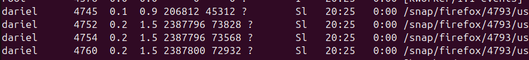

Procesos en Linux Ubuntu
En Linux, un proceso es una instancia de un programa en ejecución. Cada proceso tiene un identificador único llamado PID (Process ID). Los procesos en Linux pueden ejecutarse en primer plano (foreground) o en segundo plano (background).
Procesos de Primer y Segundo Plano
- Procesos de Primer Plano: Son aquellos que se ejecutan directamente desde la terminal y ocupan el control de la misma hasta que finalizan.
- Procesos de Segundo Plano: Son aquellos que se ejecutan sin ocupar el control de la terminal, permitiendo al usuario seguir utilizando la terminal para otros comandos.
Comando top
El comando top muestra una lista dinámica de los procesos que están consumiendo más recursos en el sistema. Cada línea de la salida de top proporciona información detallada sobre un proceso.

Significado de Cada Línea en top
- PID: Identificador del proceso.
- USUARIO: Usuario que ejecuta el proceso.
- PR: Prioridad del proceso.
- NI: Valor de nice del proceso.
- VIRT: Memoria virtual utilizada por el proceso.
- RES: Memoria residente utilizada por el proceso.
- SHR: Memoria compartida utilizada por el proceso.
- S: Estado del proceso (S: Dormido, R: Ejecutando, Z: Zombie, etc.).
- %CPU: Porcentaje de CPU utilizado por el proceso.
- %MEM: Porcentaje de memoria utilizado por el proceso.
- HORA+: Tiempo total de CPU utilizado por el proceso.
- ORDEN: Nombre del comando o proceso.
Opciones Útiles con top
-u [usuario]: Muestra los procesos de un usuario específico.-p [PID]: Muestra información de un proceso específico.-n [número]: Muestra un número específico de iteraciones y luego sale.
Comando htop
htop es una versión mejorada de top que proporciona una interfaz interactiva y más amigable. Algunas mejoras de htop respecto a top incluyen:

- Navegación más fácil con teclas de flecha.
- Uso de colores para una mejor visualización.
- Posibilidad de matar procesos directamente desde la interfaz.
- Visualización de la carga de CPU y memoria en forma de barras.
Comando ps aux
El comando ps aux muestra una instantánea de todos los procesos en el sistema. Cada columna proporciona información similar a top, pero en un formato estático.

Opciones Útiles con ps aux
ps aux --sort=-%mem: Ordena los procesos por uso de memoria.ps aux --sort=-%cpu: Ordena los procesos por uso de CPU.ps aux | grep [nombre]: Filtra los procesos por nombre.
Comando pstree
El comando pstree muestra los procesos en forma de árbol, lo que permite ver la jerarquía y relación entre procesos.

Opciones Útiles con pstree
pstree -p: Muestra los PID de los procesos.pstree -u: Muestra los usuarios de los procesos.pstree -a: Muestra los argumentos de los procesos.
Finalizar Procesos en Linux Ubuntu
Para finalizar un proceso en Linux, se puede utilizar el comando kill seguido del PID del proceso. Por ejemplo:
kill 1234
Para forzar la finalización de un proceso, se puede usar la señal -9:
kill -9 1234
Otra opción es usar killall seguido del nombre del proceso:
killall nombre_proceso
